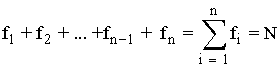
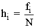
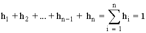
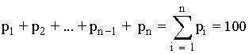

Tablas de frecuencias
Después de recopilar los datos se procede a su recuento para expresarlos de forma ordenada y se construye una tabla de frecuencias.
Frecuencia absoluta (fi): Es el número de veces que aparece un valor xi de una variable estadística en el estudio.
La suma de todas las frecuencias absolutas es necesariamente el tamaño de la muestra o la población de estudio.

Frecuencia relativa (hi): Es el cociente de la frecuencia absoluta correspondiente, fi, entre el tamaño N de la población.

La suma de todas las frecuencias relativas es la unidad.

Porcentaje (pi): Es el producto de la frecuencia relativa correspondiente , hi por 100.
pi = hi · 100
La suma de todos los porcentajes es 100.

Frecuencia absoluta acumulada (Fi) de un dato es la suma de todas las frecuencias absolutas de los valores menores o iguales que él.
Fi= f1 + f2 + ... + fi
Frecuencia relativa acumulada (Hi) de un dato es la suma de todas las frecuencias relativas de los valores menores o iguales que él.
Hi= h1 + h2 + ... + hi
Porcentaje acumulado (Pi) de un dato es la suma de todos los porcentajes de los valores menores o iguales que él.
Pi= p1 + p2 + ... + pi
*Ejemplo: Queremos estudiar la talla de zapatos de los alumnos de una clase. Obtenemos los siguientes datos:
38, 38, 38, 40, 35, 39, 37, 37, 40, 37, 36, 35, 36, 40, 40, 42, 41, 42, 39, 41, 38, 39, 35, 36, 42, 42
Realizar la tabla de frecuencias.
| Variable estadística | Frecuencia absoluta | Frecuencia relativa | Porcentaje (%) | Frecuencia absoluta acumulada | Frecuencia relativa acumulada | Porcentaje acumulado (%) |
| xi | fi | hi | pi | Fi | Hi | Pi |
| 35 | 3 | 0,1153 | 11,53 | 3 | 0,1153 | 11,53 |
| 36 | 3 | 0,1153 | 11,53 | 3 + 3 = 6 | 0,2307 | 23,07 |
| 37 | 3 | 0,1153 | 11,53 | 6 + 3 = 9 | 0,3461 | 35,61 |
| 38 | 4 | 0,1538 | 15,38 | 9 + 4 = 13 | 0,5 | 50 |
| 39 | 3 | 0,1153 | 11,53 | 13 + 3 = 16 | 0,6153 | 61,53 |
| 40 | 4 | 0,1538 | 15,38 | 16 + 4 = 20 | 0,7692 | 76,92 |
| 41 | 2 | 0,0769 | 7,69 | 20 + 2 = 22 | 0,8461 | 84,61 |
| 42 | 4 | 0,1538 | 15,38 | 22 + 4 = 26 | 1 | 100 |
| Total | N=26 | 1 | 100 |
Distribución de frecuencia de datos agrupados
Se emplea si las variables toman un número grande de valores o la variable es continua.
Se agrupan los valores en intervalos que tengan la misma amplitud denominados clases. A cada clase se le asigna su frecuencia correspondiente.
Límites de la clase: Cada clase está delimitada por el límite inferior de la clase y el límite superior de la clase.
Amplitud de la clase: La amplitud de la clase es la diferencia entre el límite superior e inferior de la clase.
Marca de clase: La marca de clase es el punto medio de cada intervalo y es el valor que representa a todo el intervalo para el cálculo de algunos parámetros.
*Ejemplo de construcción de una tabla de datos agrupados:
Estamos realizando un estudio con el siguiente conjunto de datos:
3, 15, 24, 28, 33, 35, 38, 42, 43, 38, 36, 34, 29, 25, 17, 7, 34, 36, 39, 44, 31,
26, 20, 11, 13, 22, 27, 47, 39, 37, 34, 32, 35, 28, 38, 41, 48, 15, 32, 13
Localizamos los valores menor y mayor de la distribución, en este caso 3 y 48.
Los restamos y buscamos un número entero algo mayor y que sea divisible por el número de intervalos que queremos establecer.
En nuestro caso, 48 - 3 = 45, incrementamos el número hasta 50.
50/5 = 10 intervalos.
Formamos los intervalos teniendo presente que el límite inferior de una clase pertenece al intervalo, pero el límite superior no pertenece intervalo, se cuenta en el siguiente intervalo. De ahí la notación corchete (intervalo cerrado) y paréntesis (intervalo abierto).
Denominaremos ci (aunque también la podéis encontrar como xi) a la marca de clase que como ya hemos mencionado es el punto medio de cada intervalo y procedemos a hacer la tabla.
| Intervalos | Marca de clase (ci) | Frecuencia absoluta (fi) | Frecuencia relativa (hi) | Frecuencia absoluta acumulada (Fi) | Frecuencia relativa acumulada (Hi) |
| [0, 5) | 2,5 | 1 | 0,025 | 1 | 0,025 |
| [5, 10) | 7,5 | 1 | 0,025 | 2 | 0,050 |
| [10, 15) | 12,5 | 3 | 0,075 | 5 | 0,125 |
| [15, 20) | 17,5 | 3 | 0,075 | 8 | 0,200 |
| [20, 25) | 22,5 | 3 | 0,075 | 11 | 0,275 |
| [25, 30) | 27,5 | 6 | 0,150 | 17 | 0,425 |
| [30, 35) | 32,5 | 7 | 0,175 | 24 | 0,600 |
| [35, 40) | 37,5 | 10 | 0,250 | 34 | 0,850 |
| [40, 45) | 42,5 | 4 | 0,100 | 38 | 0,950 |
| [45, 50) | 47,5 | 2 | 0,050 | 40 | 1 |
*En el siguiente vídeo, podéis ver más ejemplos para su construcción con distintos tipos de variables: